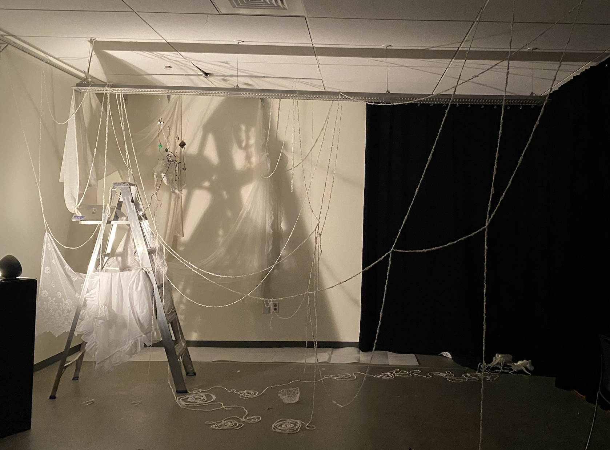
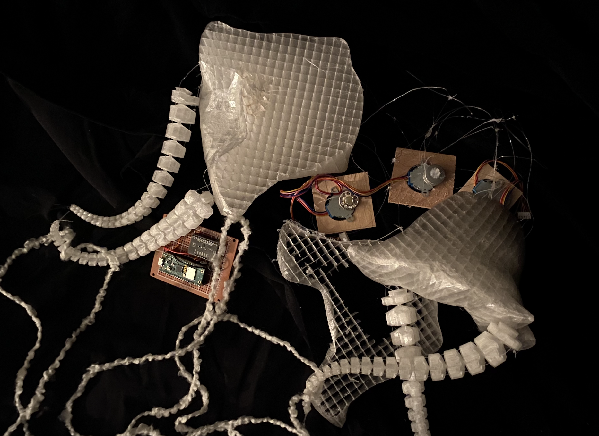
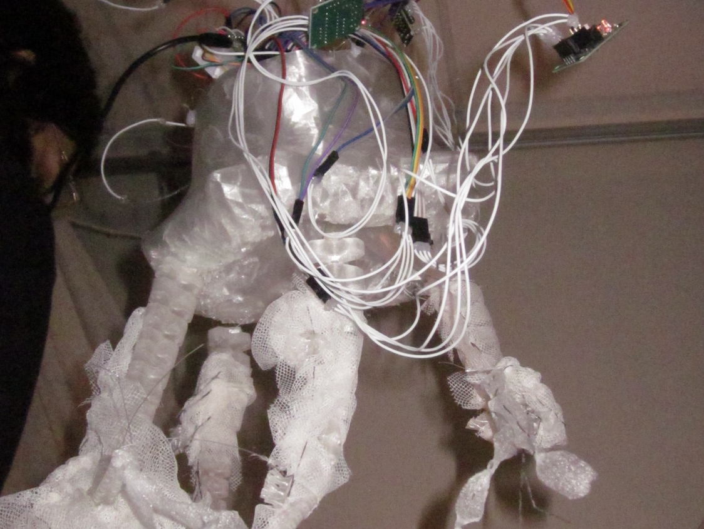

Arus Daryayi is a research-creation installation featuring two jellyfish-like soft robotic creatures designed to challenge the culture of instant gratification.
Exhibited in Concordia’s Holodeck, the work invites participants into a slow, reciprocal dialogue through touch, sound, and light, resisting the opaque logic of the digital "Black Box" in favor of transparency and organic presence.
The project moved from ephemeral bioplastics to 3D printed TPU and mesh fabric to ensure mechanical reliability. The tentacles utilize SpiRobs open-source logarithmic spiral models.
The transition from biomaterials to synthetic plastic reflects the creators' own struggle with the "culture of fast production," turning the technical limitations into a living argument for mechanical vulnerability.
A full-print, dense structure that conceals its internal mechanisms. This iteration proved difficult to wire and repair, representing the "enchantment" of consumer tech that masks technical realities.

An intuitive, semi-exposed structure. By revealing the "mechanical nerves" and tendons, this model fosters empathy through legibility and invites a meditative practice of maintenance.

Using MPR121 touch sensors and conductive thread, the creatures respond to tactile provocation. High-torque stepper motors drive a cable system of fishing wire "tendons."
The interaction follows a 2-2 Conversing model. If a user releases a leg before the slow curling motion completes, the motor uncurls, forcing the interactor to meet the artifact at its own rhythm.
By utilizing the inherent slowness of stepper motors, the piece rejects the "command and control" structure of modern devices in favor of a negotiated, slow-frequency movement.
Following Lupetti and Murray-Rust, the work argues that disenchanted technology—which shows its mechanics—can be more enchanting than "magical" hidden systems.
Empathy is reframed as patience. As participants observe the physical effort of the motors pulling strings, they form a deeper connection to the machine's labor.
The installation features three participants: the interactor, the "Black Box" connected by yarn tendrils on the ground, and the reactive creature suspended centrally.
Through a bioluminescent feedback loop, internal lights fade in and out as humans approach (via ultrasonic sensors), creating a sense of non-human sentience and grounding presence.